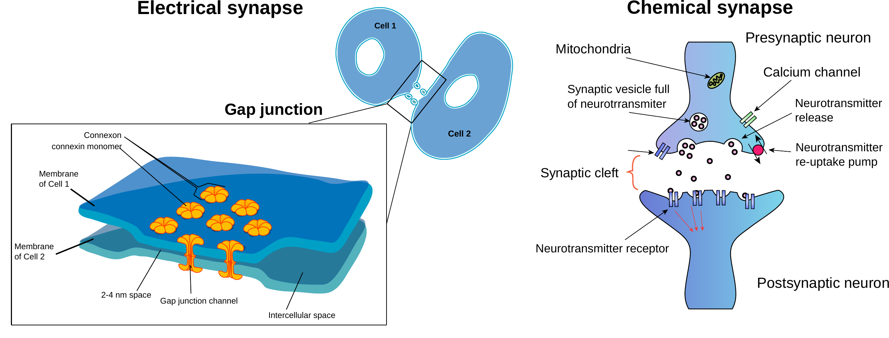

Part 1: Introduction to Computational Neuroscience
Foundations and Motivation for Neural Modeling
Why Computational Neuroscience?
The brain is one of the most complex systems in nature. Understanding how neurons communicate, process information, and generate behavior requires tools that can bridge multiple scales—from molecular mechanisms to network dynamics and cognitive functions.
The Challenge of Complexity
Consider these facts:
- Each neuron can connect to thousands of other neurons
- Neural signals process information in multiple ways (rate-coding, temporal coding…) and on timescales from milliseconds to hours
- Brain functions emerge from the collective activity of neural populations
Computational models help us:
- Formalize hypotheses about neural function
- Predict neural behavior under stimulation or different conditions
- Check theories that would be difficult or impossible to test experimentally
- Integrate findings across different scales and modalities
That enables a cycle of: Experimental measurement -> Model building -> Simulation -> Prediction -> Experimental validation.
Levels of Neural Modeling
Neural systems can be modeled at different levels of abstraction:
1. Biophysical Models
Detail: High (ion channels, membrane properties)
Scale: Single neuron
Examples: Hodgkin-Huxley model, multi-compartment models
These models capture detailed mechanisms but are computationally expensive.
2. Simplified Neuron Models
Detail: Medium (integrate-and-fire, adaptive threshold)
Scale: Single neuron to small networks
Examples: Izhikevich model.
Balance between biological realism and computational efficiency.
3. Rate Models
Detail: Low (average firing rates)
Scale: Large networks
Examples: Wilson-Cowan model, neural field models
Capture population dynamics efficiently.
4. Abstract Models
Detail: Minimal (information processing)
Scale: System-level
Examples: Artificial neural networks, cognitive decision-making models
Focus on function rather than biological detail.
The appropriate level of modeling depends on your question:
- Studying ion channel responses? → Biophysical model
- Understanding network interactions? → Simplified neuron model
- Modeling sensory processing across large populations? → Rate model
- Testing cognitive theories? → Abstract model
Neuron Dynamics
Neurons encode information by using electrical signals. Their membrane potential changes in response to internal states and external stimuli. As a result, neurons produce action potentials (spikes).
*Video showing action potential propagation through a neuron. Source: Wikimedia Commons. By Laurentaylorj - Own work, CC BY-SA 3.0
The Neuron as an Electrical Circuit
A neuron can be modelled as an electrical circuit with:
- Capacitance (C): Cell membrane stores charge
- Resistance (R): Ion channels control current flow
- Current sources (I): Synaptic inputs and intrinsic currents

Information coding in Neurons
Actions potentials are the primary means of neural communication. Neurons can encode information using a spiking signal in several ways: - Shape of the action potentials (spikes): conveys information about the state of a neuron - Firing rate: Average number of spikes per unit time - Temporal coding: Precise timing of action potentials
But neurons do not operate in isolation.
From Neurons to Networks: Synapses
Why networks matter
Individual neurons are limited in their computational capabilities. Complex nervous functions emerge from networks of interconnected neurons. For instance, a simple learning circuit in a snail may contain around 20–50 neurons with roughly 1,000–2,000 synapses, a small cortical microcircuit in a mouse can involve 100 neurons forming 100,000–1,000,000 synapses, and human cortical circuits feature neurons with 10,000–30,000 synapses each, resulting in billions of connections. This dramatic increase in connectivity underlies the emergence of more sophisticated behaviors and cognitive functions.
Synaptic connections
Neurons communicate through synapses:
- Chemical synapses: Release neurotransmitters (excitatory or inhibitory)
- Electrical synapses: Direct electrical coupling through gap junctions
The strength and dynamics of synaptic connections determine network behavior.

Network Architecture
Different connection patterns lead to different dynamics:
- Feedforward networks: Information flows in one direction
- Recurrent networks: Neurons connect back to each other like Central Pattern Generators (CPGs)
- Structured networks: Specific patterns (e.g., columnar organization)
Recurrent connections can produce robust and variable rhythmic dynamics.
Population Dynamics
In large networks, we often care about population-level properties:
- Firing rates: Average number of spikes per unit time
- Synchrony: How coordinated is the activity?
- Oscillations: Rhythmic patterns of activity
- Frequency responses: How does the network respond to inputs at different frequencies?
Key Principles for Modeling
Computational models help interpret experimental findings:
- Forward problem: Given a model, predict what measurements should look like
- Inverse problem: Given measurements, infer underlying neural properties
- Parameter estimation: Fit model parameters to match data
- Hypothesis testing: Use models to generate testable predictions
- Formulate a hypothesis about neural function
- Build a computational model
- Simulate and analyze model behavior
- Compare with experimental data
- Refine the model and repeat
- Models are tools: They help us understand, predict, and test ideas about neural systems
- Choose the right level: Match model complexity to your question
- Integration matters: Models are most powerful when combined with experiments
- Frequency matters: Neural circuits have frequency-dependent properties that are crucial for function
- Start simple, build up: Begin with simple models and add complexity as needed
Looking Ahead
Now that we understand why and what we model in computational neuroscience, we’re ready to learn how to implement these models using the Neun library.
In the next sections, we’ll:
- Set up and explore the Neun library
- Implement single neuron models
- Build neural networks
- Simulate complex dynamics
- Analyze and visualize results
👉 Continue to Part 2: Getting Started with Neun
Further Reading
- Dayan, P., & Abbott, L. F. (2001). Theoretical Neuroscience. MIT Press.
- Gerstner, W., Kistler, W. M., Naud, R., & Paninski, L. (2014). Neuronal Dynamics. Cambridge University Press.
- Ermentrout, G. B., & Terman, D. H. (2010). Mathematical Foundations of Neuroscience. Springer.